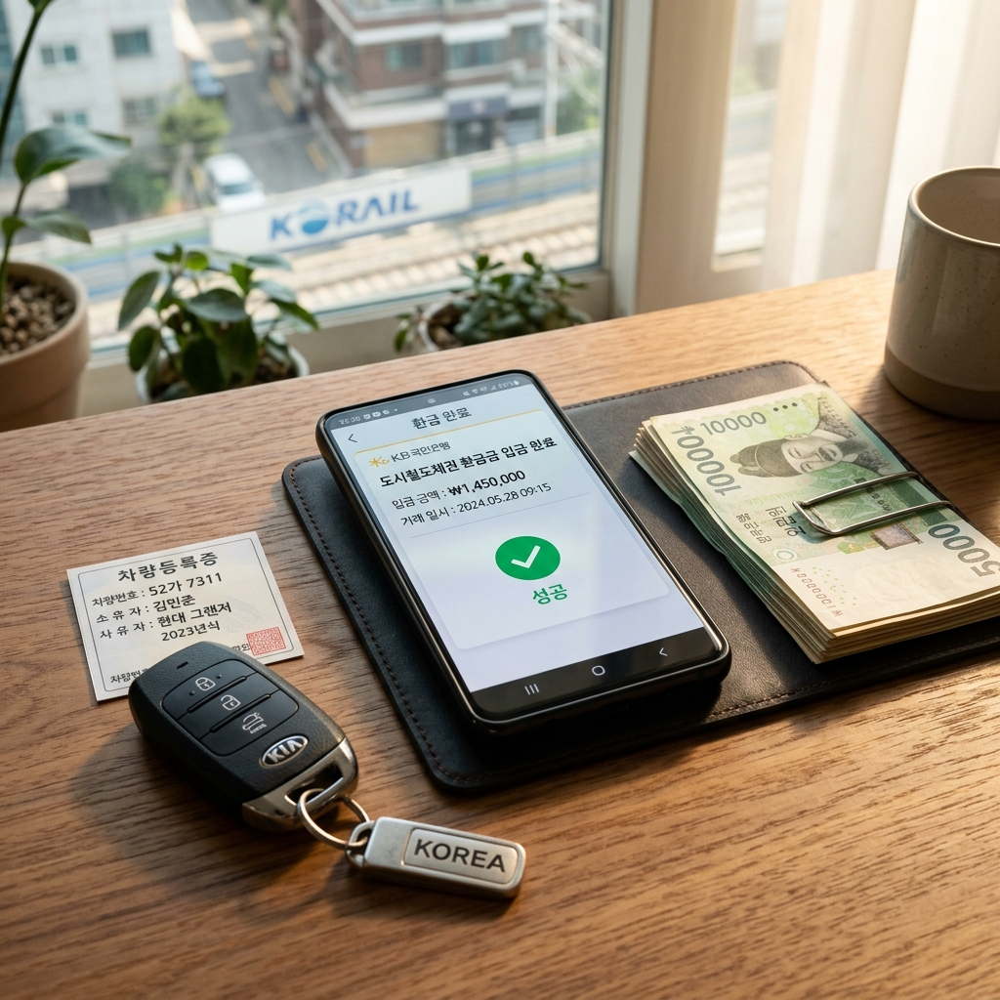
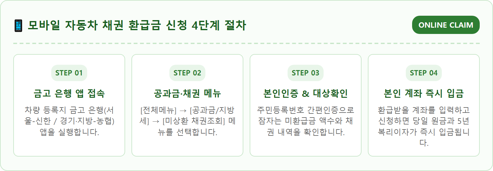
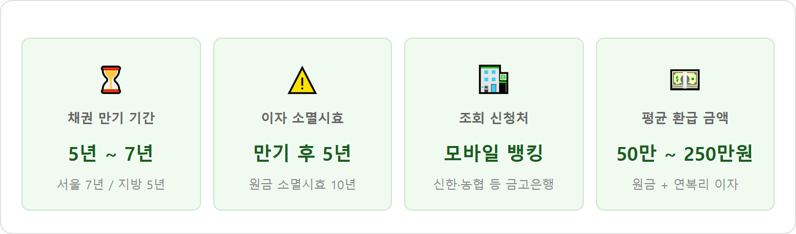
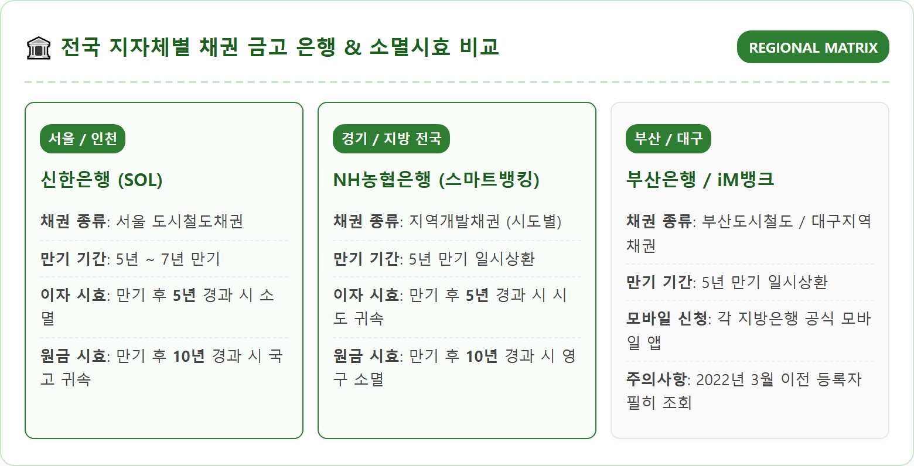
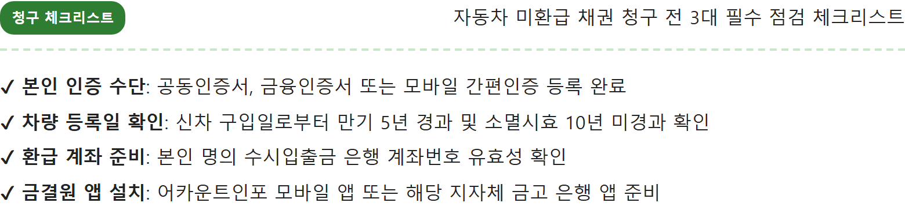
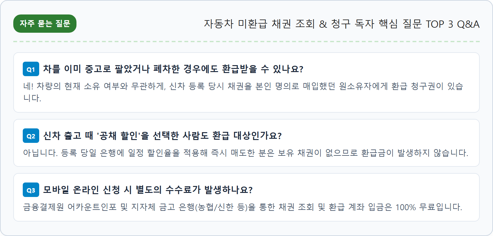

대한민국에서 자동차를 구매하여 본인 명의로 등록할 때, 모든 운전자는 자동차관리법과 지자체 조례에 따라 의무적으로 '지방채'를 사야 합니다.
서울, 대구, 부산 등 지하철이 운행되는 대도시는 '도시철도채권'을 발행하고, 경기도를 비롯한 기타 시·도 지자체는 '지역개발채권'을 발행합니다. 이 자금은 도로 건설, 상하수도 정비, 지하철 연장 등 도시 공공 인프라를 확충하는 재원으로 쓰입니다.
차량을 구매할 때 영수증에 취득세와 함께 수십만~수백만 원의 '공채 매입비'가 적혀 있던 것을 기억하실 것입니다. 이 채권은 정부나 지자체에 그냥 기부하는 세금이 아니라, 일정 기간이 지나면 지자체가 원금에 약정 이자를 붙여 차주에게 반드시 갚아야 하는 빚(채권)입니다.
차량을 등록할 때 차주는 2가지 선택지 중 하나를 택했습니다. 내가 환급을 받을 수 있는지 여부는 당시 어떤 방식을 선택했는지에 달려 있습니다.
| 구분 | 공채 즉시 할인 (공채 할인 매도) | 공채 만기 보유 (현금 전액 매입) |
|---|---|---|
| 방식 설명 | 채권을 사자마자 일정 할인율(수수료)을 떼고 은행에 즉시 되파는 방식 | 채권 액면가 전액을 현금으로 지불하고 만기까지 보유하는 방식 |
| 초기 지출 비용 | 채권 액면가의 약 5~10% 수준만 수수료로 납부 (소액 지출) | 채권 액면가 100% 현금 지출 (예: 2,000만 원 차량 기준 100만~250만 원) |
| 만기 환급 대상 여부 | 환급금 없음 (0원) (구매 즉시 은행에 팔았으므로 채권 소유권 소멸) |
★ 100% 환급 대상 (원금 + 5~7년 치 복리 이자 합산 전액 수령) |
| 선택 비중 | 차량 구매자의 약 80~85% | 차량 구매자의 약 15~20% (또는 리스·렌트 만기 인수자) |

자동차를 살 때 채권을 얼마나 샀는지는 차량의 등록 지역과 엔진 배기량, 승용·승합 구분에 따라 법으로 정해져 있습니다.
| 차량 구분 및 배기량 | 서울 (도시철도채권) | 경기도 및 지방 (지역개발채권) | 비고 및 면제 혜택 |
|---|---|---|---|
| 1,000cc 미만 (경차) | 전액 면제 (0%) | 전액 면제 (0%) | 모닝, 레이, 캐스퍼 등 공채 매입 의무 없음 |
| 1,000cc ~ 1,600cc 미만 (아반떼, 셀토스, 소형 SUV) |
면제 (0%) (2023년 제도 개정) |
면제 (0%) (2023년 제도 개정) |
서민 부담 완화를 위해 2023년 3월부터 1,600cc 미만 소형차 의무 면제 |
| 1,600cc ~ 2,000cc 미만 (쏘나타, K5, 싼타페 하이브리드) |
차량 공급가액의 12% | 차량 공급가액의 4% ~ 6% | 차량 가격 3,000만 원 기준 서울은 약 360만 원, 지방은 120만~180만 원 상당 채권 매입 |
| 2,000cc 이상 대형·고급차 (그랜저, 제네시스 G80, 카니발) |
차량 공급가액의 20% | 차량 공급가액의 5% ~ 12% | 차량 가격 5,000만 원 기준 서울은 1,000만 원, 지방은 250만~600만 원 상당 채권 매입 |

자동차 채권 환급금에서 가장 무서운 함정은 '소멸시효(消滅時效)'입니다.
지방채권은 만기가 도래하면 자동으로 내 계좌로 입금되지 않고, 차주가 상환을 청구해야만 지급되는 것이 원칙이었습니다 (2022년 3월 이전 등록 차량).
소멸시효 법적 기준:
• 이자 소멸시효 (5년): 채권 만기일(발행 후 5년 또는 7년)로부터 5년이 경과하는 날 자정에 그동안 불어난 모든 이자 청구권이 영구 소멸되어 지자체 금고로 귀속됩니다.
• 원금 소멸시효 (10년): 만기일로부터 10년이 지나면 원금조차 단 1원도 돌려받을 수 없으며 영원히 국고로 환수됩니다.
예를 들어 2014년에 경기도에서 2,000cc 승용차를 사며 5년 만기 지역개발채권을 매입했다면, 2019년에 만기가 되었고 2024년에 이미 5년 이자 소멸시효가 끝났습니다. 2029년이 지나면 원금마저 사라지므로 하루라도 빨리 찾아야 합니다.
채권을 어디서 환급받아야 하는지는 차량을 등록했던 관할 시·도 지자체의 금고 은행에 따라 나뉩니다.
| 차량 등록 지자체 | 전담 금고 은행 | 모바일 앱 및 인터넷뱅킹 조회 경로 |
|---|---|---|
| 서울특별시 | 신한은행 (SOL) | 신한 SOL뱅크 → [전체메뉴] → [공과금/법원] → [도시철도채권] → [미상환채권조회/상환] |
| 경기도, 강원도, 충청도, 전라도, 경상도 등 |
NH농협은행 (올원뱅크) | NH스마트뱅킹 → [공과금] → [지역개발채권] → [미상환채권조회/상환] |
| 인천광역시 | 신한은행 / 하나은행 | 신한 SOL뱅크 또는 하나원큐 앱 내 [지방세/공과금] 메뉴 |
| 대구광역시 | DGB대구은행 (iM뱅크) | iM뱅크 앱 → [공과금] → [지역개발채권 상환청구] |
| 부산광역시 | BNK부산은행 | 부산은행 모바일뱅킹 → [공과금] → [도시철도채권 상환] |


은행 앱 이용이 번거롭거나 여러 지자체에 흩어진 환급금을 한 번에 확인하고 싶다면 행정안전부의 위택스(Wetax)를 이용하면 간편합니다.
매년 수천억 원의 채권이 소멸시효로 사라지는 문제를 해결하기 위해, 정부는 2022년 3월부터 신차 등록 시 차주 명의 계좌로 만기 환급금을 자동 입금해 주는 제도를 도입했습니다.
따라서 2022년 3월 이후 차량을 등록하면서 만기 보유를 선택하고 환급 계좌를 적어낸 차주는 별도 신청 없이도 만기일에 등록 계좌로 자동 입금됩니다.
그러나 그 이전에 차량을 등록했거나, 당시 계좌 등록을 누락한 분, 또는 그 사이 통장을 해지하거나 바꾼 분들은 반드시 은행 앱을 통해 계좌 유효성을 확인하고 상환 청구를 직접 진행해야 합니다.

"이미 몇 년 전에 차를 중고로 팔았거나 폐차했는데, 그래도 환급금을 받을 수 있나요?"라는 질문을 자주 받습니다.
정답은 "100% 받을 수 있다"입니다.
도시철도채권 및 지역개발채권은 차량 자체에 귀속된 것이 아니라, 차량을 등록할 당시 채권을 직접 매입했던 차주 개인(주민등록번호)에게 발행된 독립 유가증권입니다.
따라서 차를 이미 매각하여 남의 차가 되었거나 폐차장을 거쳐 말소되었더라도, 당시 매입했던 본인의 채권 권리는 만기일까지 그대로 살아 있습니다. 과거 5~10년 전 차량을 소유했던 이력이 있다면 지금 즉시 조회해 보아야 하는 이유입니다.
내 소중한 금융 자산을 지키기 위해 기억해야 할 3가지 원칙입니다.
1. 5년 주기로 채권 환급금 정기 조회: 자동차 채권 만기는 5년 또는 7년이므로, 차량 구매 후 5년 차가 되는 해에는 반드시 금고 은행 앱을 열어 만기 도래 여부를 확인하세요.
2. 스팸 및 보이스피싱 주의: 지자체나 은행은 절대 문자 메시지로 수상한 링크(URL)를 보내 환급금을 찾아가라고 요구하지 않습니다. 반드시 공식 은행 앱이나 위택스를 직접 열어 조회해야 안전합니다.
3. 자동차세 환급도 함께 점검: 연초에 자동차세를 연납한 후 연중에 차를 팔거나 폐차했다면, 남은 기간의 자동차세 환급금도 위택스에서 함께 돌려받을 수 있습니다.
• 화장실 타일 줄눈 변색·곰팡이 셀프 제거 순서 — 락스 희석법 vs 줄눈 코팅 시공 비용 비교
• 여권 유효기간 얼마 남았을 때 재발급해야 하나 — 해외여행 6개월 룰과 자동출입국심사(SES) 등록 방법